Structural buckling assessment & weight optimization
Stiffened aerospace L-bracket assessed with HyperMesh and MSC Nastran using SOL 101 linear static analysis, mesh convergence and SOL 105 linear eigenvalue buckling, followed by geometry-driven weight reduction.
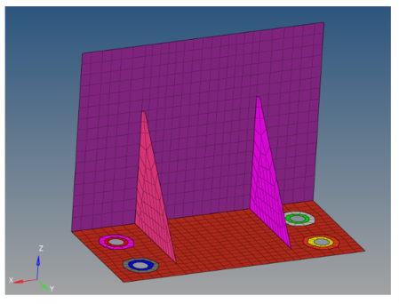
From baseline model to optimized design
A documented shell-FEA workflow linking mesh verification, static response, buckling stability and geometry iteration.
Project objectives
- Develop an aerospace-style stiffened L-bracket suitable for shell FEA.
- Evaluate static deformation and von Mises stress under a 10 kN reference load.
- Perform linear eigenvalue buckling using MSC Nastran SOL 105.
- Verify mesh adequacy through mesh refinement and convergence.
- Investigate web-thickness reduction for mass savings.
- Recover buckling performance using targeted gusset geometry changes.
Analysis workflow
Define bracket geometry.
Shell idealization and mesh.
Static response and checks.
Buckling and design iterations.
Baseline definition
The baseline dimensions and material properties used for the structural assessment.
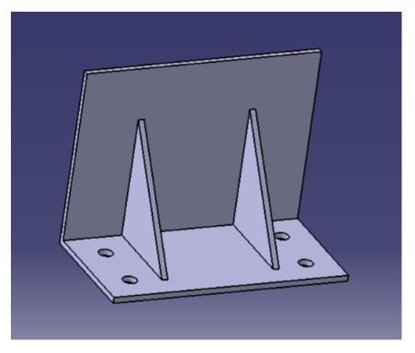
Figure 1 — Isometric CAD view showing the base, vertical web, two gussets and four mounting holes.
Baseline geometry
Material properties
The report uses a consistent kg–mm–s unit system and represents Aluminium 7075-T6 with linear isotropic elastic properties.
Shell idealization, mesh & loading
2D shell elements were used with explicit connection idealizations for mounting and load introduction.
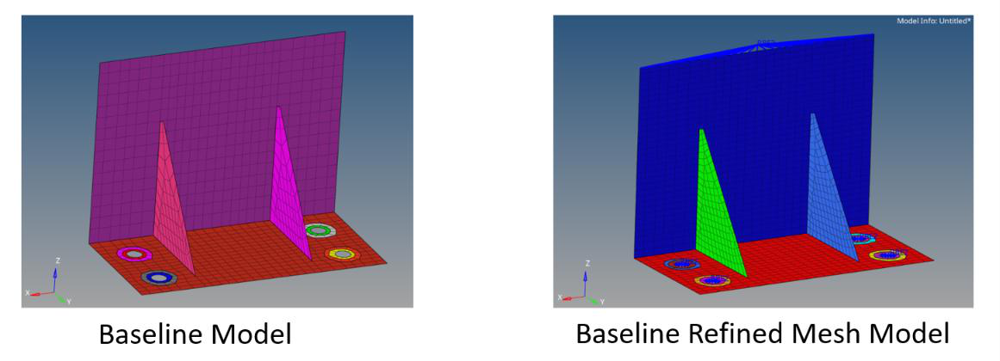
Figure 2 — Baseline and refined shell mesh models.
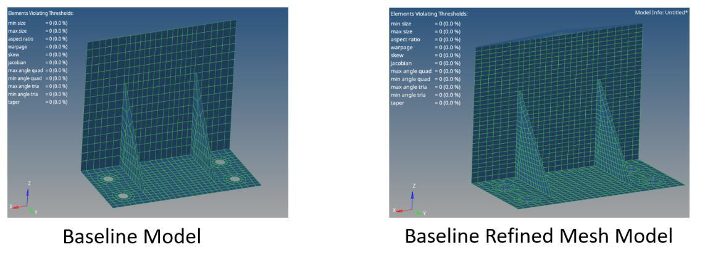
Figure 3 — Element-quality check showing zero configured quality-threshold violations.
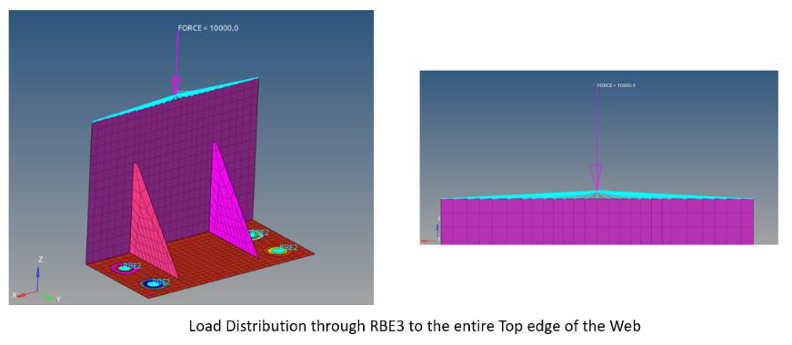
Figure 4 — RBE3 load introduction from the independent node to the complete top edge of the web.
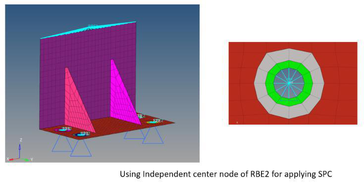
Figure 5 — RBE2 mounting-hole representation with SPC reference nodes.
Mesh
- 2D shell elements, predominantly quadrilateral.
- Initial mesh: approximately 8 mm web sizing with approximately 5 mm local refinement around holes and stress-concentration regions.
- Initial model: 1,030 elements and 1,087 nodes.
- Refined model: approximately 6 mm sizing, 1,638 elements and 1,710 nodes.
Boundary conditions & loading
- Four mounting holes represented using RBE2 connections to centre reference nodes.
- Translational constraints applied at the reference nodes.
- RBE3 connected to all nodes along the top edge of the web.
- 10,000 N downward reference force applied at the independent RBE3 node.
- Resultant-force and resultant-moment checks confirmed equilibrium between applied loading and SPC reactions.
How the analyses were performed
The static solution provides the preload state used by the eigenvalue buckling solution.
SOL 101 — Linear Static
MSC Nastran SOL 101 was used to obtain static displacement and von Mises stress under the 10 kN reference load. Reaction forces and moments were checked for equilibrium.
SOL 105 — Linear Eigenvalue Buckling
SOL 105 used the static solution as the preload state through STATSUB. EIGRL extraction was used for the buckling eigenvalues. The first positive eigenvalue was treated as the linear buckling load factor.
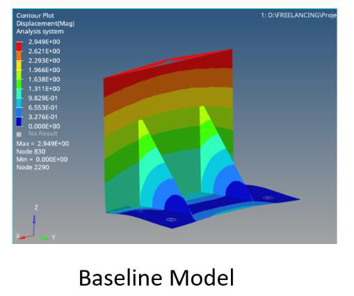
Baseline SOL 101 displacement.
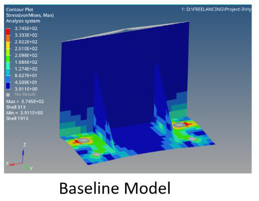
Baseline SOL 101 von Mises stress.
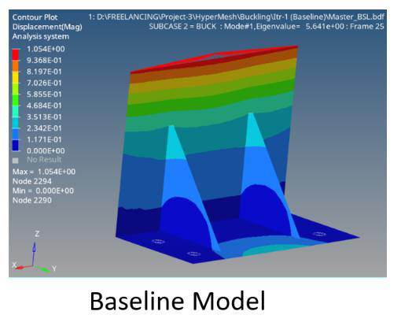
Baseline SOL 105 Mode 1 buckling shape.
Refining the baseline model
The 6 mm refined mesh was adopted for the design comparison after both static and buckling responses showed less than 1% change.
| Quantity | Initial mesh | Refined mesh | Change |
|---|---|---|---|
| Elements | 1,030 | 1,638 | +59.0% |
| Nodes | 1,087 | 1,710 | +57.2% |
| Max displacement | 2.949 mm | 2.961 mm | +0.41% |
| First buckling factor | 5.6411 | 5.6058 | −0.63% |
| Critical buckling load | 56.41 kN | 56.06 kN | −0.63% |
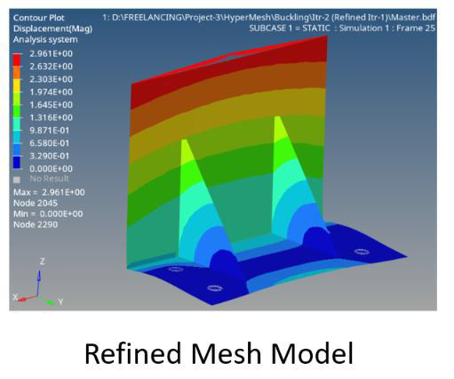
Figure 9 — Refined baseline SOL 101 displacement.
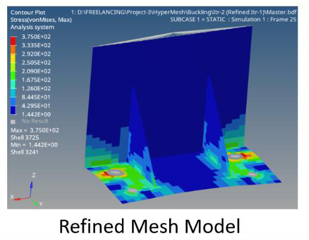
Figure 10 — Refined baseline SOL 101 von Mises stress.
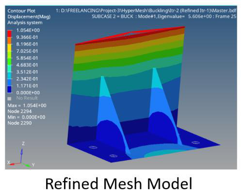
Figure 11 — Refined baseline SOL 105 Mode 1 buckling shape.
Weight reduction with buckling recovery
The design study first reduced web thickness, then modified gusset geometry to recover stability without restoring the original web thickness.
| Design | Web | Gusset H × Base | Mass (kg) | Mass change | Disp. (mm) | Global VM (MPa) | Eigen Value λ₁ | Pcr (kN) |
|---|---|---|---|---|---|---|---|---|
| A | 5 mm | 100 × 75 mm | 0.7932 | — | 2.961 | 375.0 | 5.605780 | 56.06 |
| B | 4 mm | 100 × 75 mm | 0.7103 | −10.45% | 3.004 | 388.7 | 3.637439 | 36.37 |
| C | 4 mm | 125 × 75 mm | 0.7110 | −10.36% | 3.021 | 388.7 | 4.150265 | 41.50 |
| D | 4 mm | 125 × 100 mm | 0.7398 | −6.73% | 2.809 | 381.2 | 4.461792 | 44.62 |
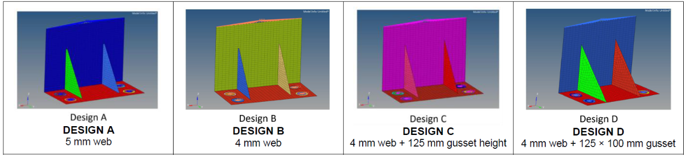
Design evolution: baseline → web-thickness reduction → increased gusset height → increased gusset footprint.
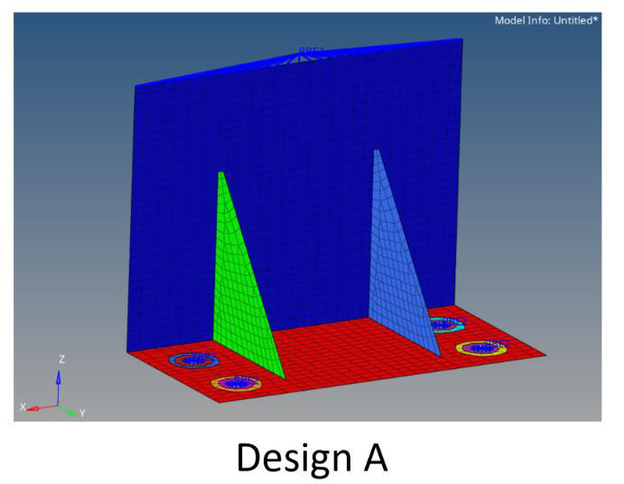
Design A — baseline geometry.
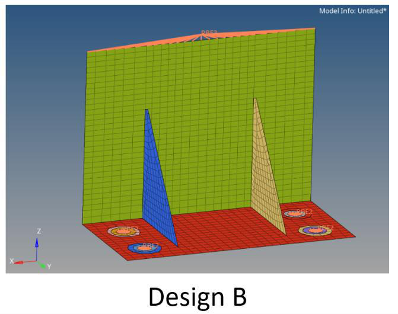
Design B — web thickness reduced from 5 mm to 4 mm.
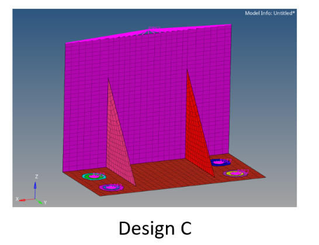
Design C — gusset height increased from 100 mm to 125 mm.
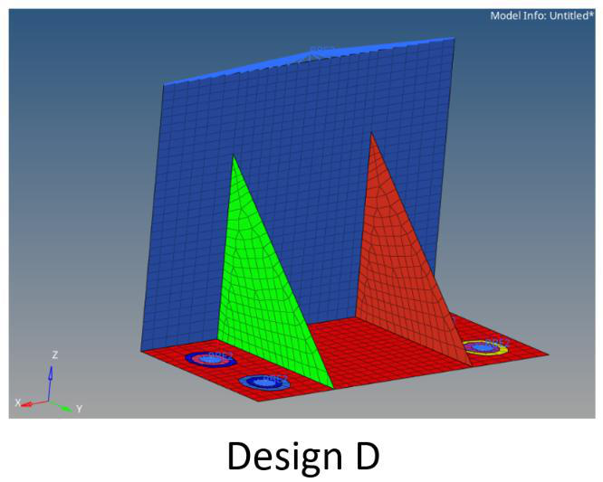
Design D — gusset base increased from 75 mm to 100 mm.
Interpreting the iterations
The study shows that static deformation and buckling stability responded differently to the same lightweighting change.
Design B — web thickness reduction
Reducing the web from 5 mm to 4 mm reduced mass by 10.45%. Static displacement increased only 1.45%, from 2.961 mm to 3.004 mm. The first buckling factor, however, fell from 5.6058 to 3.6374, reducing the predicted linear critical load from 56.06 kN to 36.37 kN.
Design C — increased gusset height
Increasing gusset height from 100 mm to 125 mm while retaining the 4 mm web kept mass almost unchanged at 0.7110 kg, while the first buckling factor increased from 3.6374 to 4.1503. The predicted critical load increased to 41.50 kN.
Design D — increased gusset footprint
Increasing the gusset base from 75 mm to 100 mm raised mass to 0.7398 kg but kept it 6.73% below baseline. Static displacement reduced to 2.809 mm, global maximum von Mises stress reduced to 381.2 MPa, and the first buckling factor increased to 4.461792.
Governing buckling pattern
Mode 1 remained a broad/global buckling deformation of the main web for all four configurations. The iterations therefore changed stiffness and stability in the same governing structural region rather than introducing a different dominant instability mode.
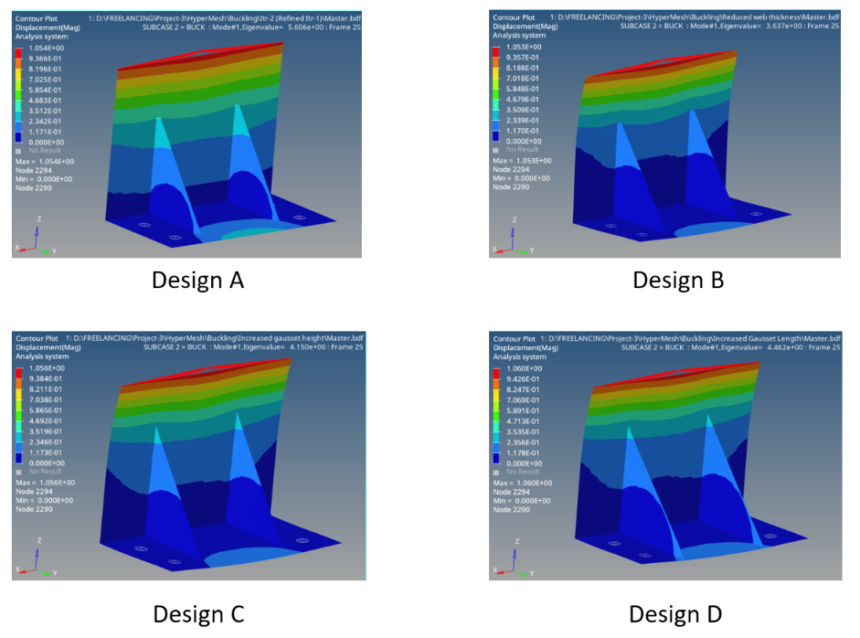
Figure 16 — Mode 1 buckling shapes for Designs A–D, showing the common broad web-buckling pattern.
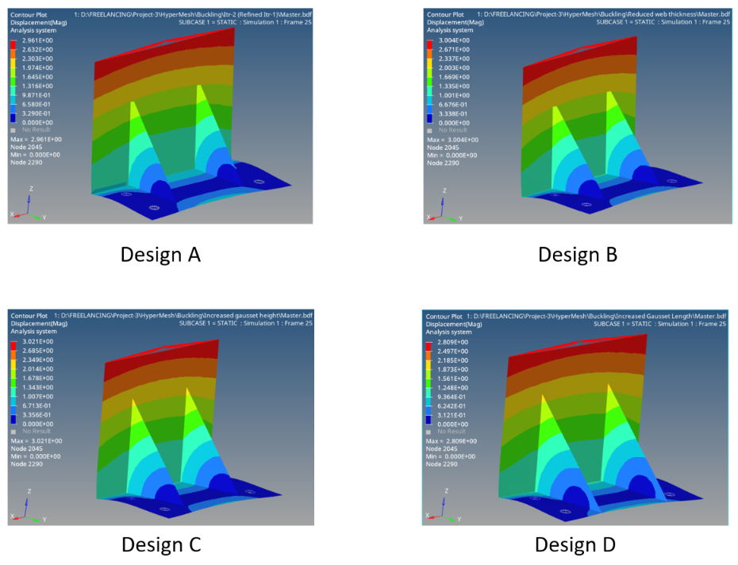
Figure 17 — Static displacement comparison across the four designs.
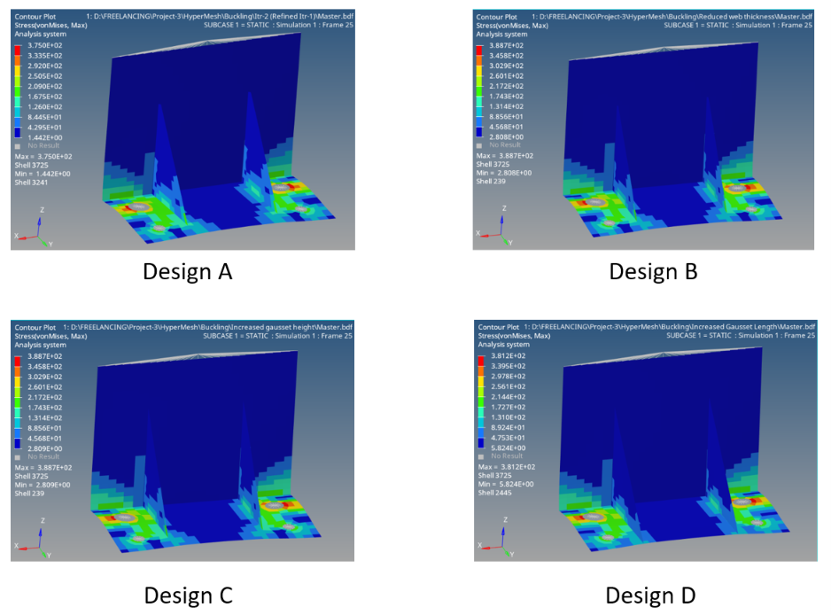
Figure 18 — Von Mises stress comparison across the four designs.
Global response vs. local constraint effects
Stress near idealized attachment constraints is interpreted separately from the global structural response.
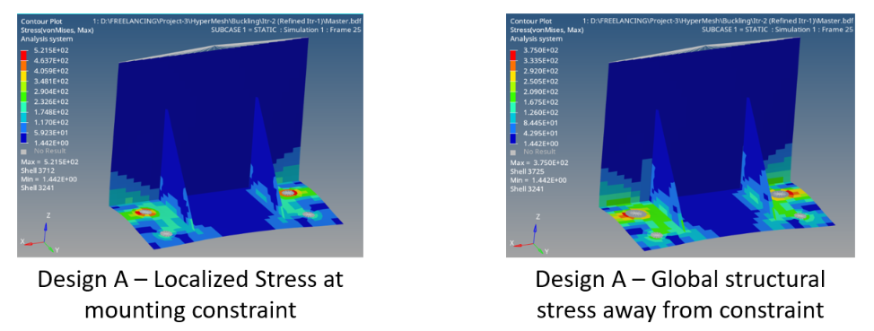
Figure 19 — Localized mounting-constraint stress compared with global structural stress away from the constraint region.
For comparison, the global maximum stress away from the immediate constrained region was approximately 375 MPa for Design A, 388.7 MPa for Designs B/C, and 381.2 MPa for Design D.
Design D — final portfolio configuration
A lightweight design candidate produced through a traceable sequence of thickness and gusset-geometry changes.
Final findings
- Final Design D mass = 0.7398 kg, a 6.73% reduction from the 0.7932 kg baseline.
- Final static displacement = 2.809 mm, 5.13% lower than the baseline 2.961 mm.
- Final global maximum von Mises stress = 381.2 MPa.
- First positive buckling eigenvalue = 4.461792.
- Predicted linear critical buckling load = 44.62 kN for the 10 kN reference load.
- Mode 1 remained broad/global web buckling.
Engineering conclusions
- Mesh refinement changed the first buckling factor and static displacement by less than 1%.
- Web-thickness reduction gave a significant mass saving but a disproportionately larger buckling penalty.
- Gusset height and footprint were effective variables for recovering buckling resistance without restoring the original web thickness.
- The localized mounting-hole stress requires caution because of the idealized RBE2/SPC attachment representation.
CAE workflow demonstrated
The case study is structured to show both modelling execution and engineering interpretation.